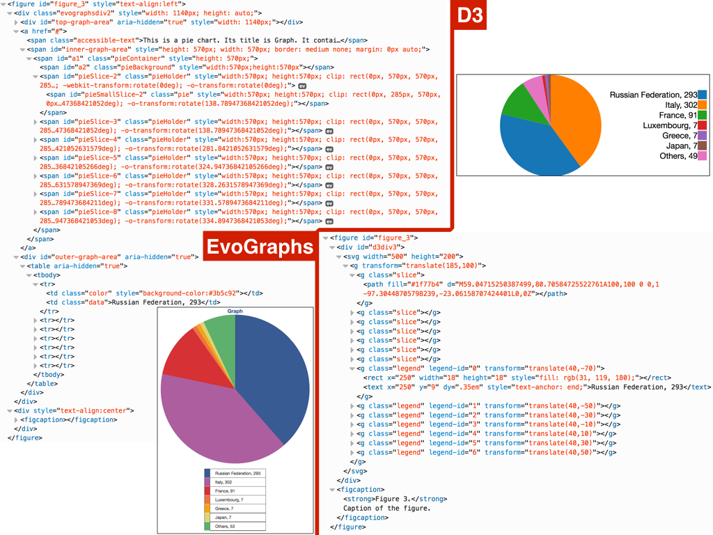

Recently, in the Web community, several proposals and discussions have tried to push the use of HTML for preparing and sharing research works within the scholarly domain. As a consequence, several native HTML-based templates and formats have been introduced for allowing researchers to write scientific documents so as to make them also easier to access even with assistive technologies, e.g., screen readers. While HTML can be a good basis for guaranteeing accessibility of such papers, several issues are still in place when we consider the inclusion of non-textual entities in the main text, such as complex formulas and figures. In this paper we experiment on the use of one of such HTML formats, i.e., the Research Articles in Simplified HTML (RASH) format, extended for creating accessible graphs automatically out of CSV data. In particular, we introduce an extension to RASH we have implemented for allowing the creation of such accessible graphs. Moreover, we analyse the outcomes of some preliminary experiments we have done using different screen readers on several operating systems and browsers.
Introduction
Accessibility of Web content from users with disabilities is a well-known topic. Standardization entities (i.e. W3C, with the WAI's activities ), associations, and governments (with the promulgation of laws and acts) since the end of 1980's until now have defined standards and conducted several initiatives with the aim of supporting users with disabilities in accessing digital content and online services.
In this context, accessing scientific content is still a critical issue, in particular for visually impaired people. Major barriers are represented by the Portable Document Format (PDF), which is the standard de-facto format for scientific papers , by the presence of graphs and graphical information, used to vehicle aggregated data as results of investigation and research activities , and by other characteristic elements, according to the topic of the research (e.g. mathematical formulae, chemical diagrams, etc.) .
Some studies in this field show that inaccessible PDFs are one of the major causes of frustration when screen readers users browse the Web . Some other works demonstrated that one of the main problems with the PDF format is a lack of knowledge or prioritization of accessibility by document authors .
Graphs can be inserted in Web pages as images. In order to make them accessible, the Web content authors have to deal with the @alt and the @longdesc attributes. This lets the screen readers identify them and vocalize a textual alternative. In the case of an omitted or empty @alt, screen readers skip over the img element, causing users with visual impairment to miss some content completely . Some plugins and browser add-ons have been designed to support authors in equipping their content with adequate textual alternatives for the graphical information . Unfortunately, they are usually based on the idea of presenting a textual description of the graph elements, instead of presenting the elements at the basis of their meaning. As a result, we obtain that screen reader users could miss the real significance of that graph and the data it represents .
In order to provide an appropriate and effective textual description to graphs and to create an accessible PDF document, the authors should be aware of the accessibility issues and practices. A feasible solution in improving accessibility of scientific documents should take into account that content creators could be not familiar with accessible authoring practices .
Providing a mechanism to facilitate the creation of accessible graphs in research articles is just the tip of an iceberg. Obtaining a more accessible format for conference proceedings and research papers could be a first step in the direction of making accessible learning and didactical materials of STEM (Science, Technology, Engineering and Mathematics) subjects. This would provide great benefits to scholars and students with visual impairments, from primary schools to Ph.D. programmes.
In this paper we presents an experiment that aimed at investigating how existing HTML-based markup languages for scholarly documents and conference proceedings can be easily extended so as to enable the automatic generation of graphs from tabular data. In particular, we have extended the Research Article in Simplified HTML (RASH) format with two tools for automatically generating graphs from CSV documents. Such two RASH extensions are based on:
evoGraphs, a jQuery plugin that allows the creation of dynamic graphs with the capability of being accessed by screen readers; and
D3, the well-known Javascript application for dynamic graphs creation.
Thanks to such RASH extensions, two versions of the same document are created, one written in RASH+evoGraphs, the other one by means of RASH+D3. Such documents contain six different graphs obtained from the same CSV data. Then, these documents have been tested by one of the authors of this paper, who is a screen reader user due to his visual impairments. He tested and compared these two versions by means of the most commonly used combinations of operating systems, browsers and screen readers. The outcomes of that evaluation highlight that only the RASH+evoGraphs extension addressed all the tested accessibility-oriented requirements in a satisfactory manner.
The rest of the paper is structured as follows. presents some related work about the accessibility of PDF documents and the most common barriers that can be faced by visually impaired users in accessing scientific documents and conference proceedings. describes the main approaches that can be adopted in writing scholarly papers in HTML, and introduces RASH as the HTML-based format we used in our experiment. The integration of evoGraphs and D3 in RASH is explained in , as well as the experiments we have conducted and the discussion of the related outcomes. Finally, concludes the paper with some final remarks and future works.
Background and Related Work
Several works have proposed investigations on the accessibility of scientific documents, with particular regards to conference proceedings formats and graphical information, when used to represent results of research activities.
In general, assistive technologies perform satisfactorily with regard to texts, even if some studies report that the Portable Document Format is not easily manageable in terms of making a research paper accessible to anyone . Hence, if research publications are not accessible to everyone, some readers could be excluded (ethical issue) and the impact of these research results limited (shareability issue).
As shown in , a significant part of information on the Internet and on the Web, is available in PDF. This is particularly true for scholarly publications. Google trends report that there is an increasing interest in PDF-related content over the last 7 years . Even if PDF was created to enable a cross-platform readability of documents, the content of PDF files is not as inherently accessible as other publishing formats, such as HTML. In fact, PDF documents are unreadable by screen readers if they are not correctly annotated, and this prevents readers with disabilities from accessing their content .
PDF was introduced in 1993, and in 2003 it started to include structural tags on PDF internal elements so as to enable a first form of accessibility. The absence of these structural tags made impossible for automated tools (such as screen readers) to access the underlying content and data appropriately .
The first serious attempt in proving accessible PDF documents was done only in 2012, when the International Standard Organisation (ISO) has proposed a PDF extension called PDF/Universal Accessibility standard (PDF/UA), described in the ISO 14289 specification . This extension provides a concrete set of guidelines for creating accessible PDFs, which aims at achieving for PDF documents what WCAG 2.0 achieves for websites . The specification includes the technical requirements for a PDF document to be accessible for a wide variety of processing systems, including assistive technologies. Similarly to WCAG 2.0 for Web content , the content creators can referee to PDF/UA to improve the accessibility of their PDF documents by providing accurate tags or textual alternatives .
This specification surely represents an undebatable useful reference. However, its requirements are not enough to guarantee fully accessible PDFs. Automatic checkers can verify if a PDF document meets the technical and syntactical requirements, but they cannot evaluate if a section is correctly tagged or if a figure is accurately described . This means that, similarly to the Web content, both automatic and manual evaluations have to be conducted with the aim of checking if a document meets the PDF/UA standard .
The community of researchers involved in the topic of accessibility is currently working on alternative solutions, e.g., by supporting research paper authors in creating accessible PDF documents and in checking their accessibility . Some works analyze the accessibility of conferences proceedings , in particular by focusing on those conferences having accessibility in their research topics . In , the authors used automated tools to evaluate the accessibility of a repository of academic documents and found that 10% of such documents had used PDF tags to provide structure appropriately . Brady et al. discussed PDF accessibility specifically within the context of ACM conferences, confirming that only a small fraction of research papers is accessible, even in the conferences most related to accessibility . The authors of conducted a study by involving 100 blind people and found that inaccessible PDF documents were one of the major causes of frustration when browsing the web, showing that inaccessible PDFs strongly affect screen reader users browsing.
Other textual formats could be exploited with the aim of making conference proceedings and research documents more accessible to a wider audience, including people with visual impairments. Examples are the format used by dokieli, which is based on HTML syntax, and ScholarlyMarkdown , which is based on the Markdown syntax. In this paper, we actually use RASH (introduced in ) , which is based on HTML syntax and offers a consistent support to authors, by including several conversion tools from well-known word processors (e.g., OpenOffice) to several publishing-oriented formats (e.g., LaTeX). Moreover, RASH enables the specification of semantic annotations within the documents by means of RDF.
While some positive results have been obtained in making textual documents accessible, assistive technologies still have a long way to go as far as graphs are concerned. In research documents, graphs can play a very important role, since they can vehicle results and (often tabular) data coming from the research activities in an aggregated and structured way.
Several works investigated how to improve the accessibility of graphs and graphical information to users with visual impairments. Some studies focus on specific kind of graphical information, such as maps , floor plans , and chemical diagrams . Some other ones are devoted to the accessibility of graphics in a specific format or for a specific medium, such as e-books . Finally, other works investigated how to better provide textual alternatives to graphics and geographical maps, by means of tables too .
Graphs are usually represented in two dimensions, while their textual descriptions follows a one-dimensional construction . Graphs and suitable creation and provision of their textual alternatives are still one of the major digital barriers for visually impaired users. Hence, one of the main goals for improving the accessibility of scientific documents is the adequate representation of graphs by screen readers .
Some plugins and browser add-ons have been designed to support authors in equipping their content with textual alternatives for the graphical information. One of the implementations we present in of this paper is based on one of them: evoGraphs . EvoGraphs is a jQuery plugin that allows the creation of dynamic and stylish graphs with the capability of being screen reader friendly. The plugin is fully customizable to the needs of the user, and it is comprised of HTML , CSS and jQuery components, which reduce page-load time significantly. Furthermore, it can easily read SVG graphs, which are widely used on the Web to render high-quality, two-dimensional graphics. The main idea at the basis of evoGraphs is to equip the textual description with the elements of a graph plus additional information for augmenting the comprehension of the visualised data, such as the specification of the graph type, additional statistical measures, such as median and standard deviation, etc.
Scholarly papers in HTML
Nowadays there are mainly two different schools of thought which propose different approaches for writing scholarly papers in HTML – with their own pros and cons.
The first one (for instance exemplified by Capadisli et al. in ) is the one that suggests not to force any particular HTML structure for research papers. This choice would allow authors to use whatever HTML structure they want for writing papers, and would reduce (even, eliminate) the fear for the template bottleneck, i.e., the fact that users will not adopt a particular language because they would be forced to follow specific rules. Leaving the user (i.e., the author) the freedom of using, potentially, the whole HTML specification may affect, in some way, the whole writing and publishing process of articles as well as its accessibility, since HTML is not an intrinsically accessible format. For instance, using a div element with @class attribute set to section instead of a section element is permitted, but it can clearly affect the accessibility of such block somehow. The latter element is a formal part of the HTML5 specification and has a clear semantics associated, already implemented by several assistive technologies. The meaning of the former one is basically constrained to the actual semantics of the value of the @class attribute, which is not defined by the HTML5 specification, rather by the author of the document.
The other approach is more constrained: it forces the use of a (usually, carefully selected) set of elements according to a specific content model and hierarchical organisation. Hence, the author is not free anymore to use HTML as he or she prefers, and has to follow quite strict rules for writing a document. However, if such rules are developed appropriately, it can result in enormous advantages for reuse, shareability, and, in particular, accessibility of the document itself. First of all, such constrained language would avoid the visualisation bottleneck, i.e., the fact that one can even reuse existing, well-developed, general purpose, and pretty standard CSSs and Javascript tools for both screen and print media, avoiding to write new code for handling paper visualisation and navigation correctly. In addition, the use of few clear Web-first formats, would certainly decrease the effort of publishers, rather than a plethora of possible variations allowed by the full HTML schema. Publishers are one of the main actors in yesterday's and today's scholarly communication domain, and meeting their needs in including HTML within the publishing workflow, so as to handle it natively, would provide great benefits, as recently discussed in some mailing lists about this topic.
The Research Articles in Simplified HTML (RASH) format is a representative of this last kind of approach to HTML markup for scholarly document. In particular, RASH is a markup language that restricts the use of HTML elements to only 31 elements for writing academic research articles. It is possible to include RDFa annotations within any element of the language, and it also allows one to specify other RDF annotations in Turtle, RDF/XML and JSON-LD.
Concerning its theoretical foundations, RASH is entirely based on a strong theory on structural patterns for XML documents . The systematic use of these structural patterns is an added value in all stages of the documents' lifecycle: they can be guidelines for creating well-engineered documents and vocabularies, rules to extract structural components from legacy documents, indicators to study to what extent documents share design principles and community guidelines.
From a pure development point of view, any RASH document begins as a simple (X)HTML5 document, by specifying the generic HTML DOCTYPE followed by the document html element with the usual namespace (i.e, http://www.w3.org/1999/xhtml) and with additional (and mandatory) prefix declarations through the @prefix attribute. The html element contains the head element for defining metadata of the document according to the DCTERMS and PRISM standards, and the body element for including the whole content of the document. On the one hand, the head element of a RASH document must/should include some information about the paper, i.e., the paper title (title element), at least one author and other related information (i.e., affiliations, keywords, categories, by using the meta and link elements). On the other hand, the body element mainly contains textual elements (e.g., paragraphs, emphases, links, and quotations) for describing the content of the paper, and other structural elements (e.g., abstract, sections, references, and footnotes) used to organise the paper in appropriate blocks and to include specific complex structures (e.g., figures, formulas, listings, and tables). This article has been written by means of RASH and it is online available in its original form.
Having an adequate Web-first format for scholarly publication is the first crucial step for opening up the use of HTML for sharing research in academic venues. Another additional and crucial issues is that not all the potential actors, such as authors and publishers, are able (or willing) to write/handle scholarly articles in HTML directly, even considering those people within the Web community. Thus, the authorial activity of writing an article by using RASH (or any other Web-first format) as well as the existing processes implemented and commonly used by publishers must be supported by appropriate interfaces that promote the broad adoption of the language.
In order to address the aforementioned issue, RASH is accompanied by an extended Framework, which includes, in addition to the language, documentation and writing/conversion/extraction tools for facilitating to write and manage academic articles in RASH. Currently the RASH Framework includes:
a series of CSS3 stylesheets and Javascript tools developed for guaranteeing a clear visualisation of the document in the browser;
an XSLT-based script, i.e., rash-update.sh that allows one to convert automatically documents written using an old version of RASH into the earliest one;
a script (internet connection requested), i.e., rash-check.sh, to check RASH documents simultaneously both against the specific requirements in the RASH grammar and also against the full set of HTML checks;
an XSLT-based Java application, i.e., odt2rash.jar that allows one to convert OpenOffice documents, written according to specific guidelines, into RASH documents automatically;
several XSLT documents for converting RASH documents into ACM ICPS and Springer LNCS LaTeX styles;
a tool, i.e., the SPAR Xtractor suite, that automatically enriches RASH documents with RDFa annotations defining the actual structure of such documents in terms of the Document Component Ontology (DoCO).
Several of the aforementioned tools are actually included in the RASH Online Conversion Service (ROCS), which is a Python web application based on web.py that allows one to convert an ODT document (written according to the aforementioned guidelines) into RASH, and from RASH into LaTeX compliant with the Springer LNCS and ACM ICPS styles.
In this section, we introduce the outcomes of an experiment we prepared for assessing the quality of accessibility of automatically-generated graphs that visualise tabular information stored in CSV documents. To this end, we have created two different extensions of RASH: one based on evoGraphs , and another one based on D3 . introduces such extensions. In , we present the criteria that were used for measuring the accessibility that each implementation provided, according to different operating systems, browsers, and screen readers. discusses the outcomes of our analysis.
Use of evoGraphs and D3 in RASH
We have developed two extensions of RASH in order to create automatically graphs starting from CSV documents. Our approach was to allow the use of CSV documents within a RASH file, without including any modification to the current implementation of RASH. We only considered a slightly, and not significant at all, extension of the language so as to allow to specify an @id attribute in any script element (with text/csv type) contained in the head element when needed.
Thus, we identified two possible ways for including such CSV values within RASH documents. The first one concerns the use of an external CSV file by means of the @src attribute of the img element, when it is part of a figure box. An example of this approach is shown in .
<figure id="figure_6">
<p>
<img
src="cur_data.csv" class="pie_chart"
alt="Let's graph it!" />
</p>
<figcaption>
Caption of the figure.
</figcaption>
</figure>
The RASH code for using a CSV document contained in an external file.
The other alternative is to embed CSV rows within the RASH document itself by means of the script element (identified appropriately and specifying the CSV type) contained in the head element. This way, it can be possible to refer to such CSV content by means of a local URL specified in the @src attribute of the img element, as shown in .
The RASH code for using a CSV document embedded within a script element.
Independently from the particular structure chosen, the idea is that the img element should visualise the rendered graph (instead of the simple CSV values) according to a specific graph type (horizontal_bar_chart, vertical_bar_chart, pie_chart) specified by means of the @class attribute.
Given such premises, we extended the main RASH Javascript file so as to implement automatic graph generation from CSV documents, by using two different libraries for graphic visualisation and rendering: evoGraphs and D3 . evoGraphs is a Javascript library based on JQuery that allows the creation of graphs that are screen reader friendly, while providing a good visualisation of them. D3 is the well-known Javascript library for producing dynamic, interactive data visualizations in web browsers, which uses several existing W3C standards, e.g., SVG , HTML5 , and CSS . While D3 is very powerful, it also gives the freedom to a user to implement a graph according to her/his best preferences, without forcing the use of specific HTML5/SVG elements for that. Thus, in principle, it could be possible to develop a non-accessible graph since D3 does not provide any implemented mechanism for avoiding this.
We involved in the experiments a team of developers, with no skills and experiences in accessibility, who took care of implementing the two RASH extensions. This allowed us to evaluate the accessibility of the documents created according to such extensions, and, thus, to understand which one of the two proposed graphic tools, i.e. evoGraphs and D3, was the most appropriate for creating accessible graphs without any prior knowledge on accessibility issues.
After implementing such extensions, we prepared two RASH documents (one for each extension) including six different automatically-generated graphs: a vertical bar chart, an horizontal bar chart, and a pie chart using both the approaches presented in and . For instance, the visualisation and HTML rendering of the pie chart using embedded CSV data (as in ) is shown in . All the sources and the exemplar documents produced and used in the experiment introduced in the following sections are available at http://dasplab.cs.unibo.it/static/doceng2016/rash-evographs-d3.html.

How the RASH extensions implemented respectively with evoGraphs and D3 visualise and render in HTML a pie chart built from CSV data.
Experiment
Determining which one of the two proposed RASH extensions for generating accessible graphs in RASH from CSV data gives the best outcome in terms of accessibility is not an easy task. Blind people have now access to a variety of devices running different operating systems and screen readers. Hence, detailed tests must be conducted to verify that the evaluated method works and to ensure that it gives consistent results on different platforms, through different browsers and by using different screen readers. In addition, we needed to establish which tests run and how to evaluate their outcomes in a non-subjective way. The goal of this section is to provide such information so as to enable a future reproducibility of the experiment introduced.
First, we defined the number of testing environments, because of the plethora of operating systems, browsers and screen readers available. The choice of which components involve in the experiment has be done by including the most plausible scenarios where the proposed RASH extensions could be used in practice. Thus, we focused on desktop environments since a blind person would most likely use a computer for studying scholarly documents and analysing data in detail.
The main desktop operating systems offering accessibility support for blind people, either through native components or third party applications, are Chrome OS, Linux (in some of its flavors), Mac OS X and Microsoft Windows. According to statistics about the operating systems used by participants at the 6th Screen Reader Survey (conducted by WebAIM), Linux was used in 1% of the submissions, while Chrome OS was never used. For this reason, we focused our experiment on the two most widely used desktop operating systems: Mac OS X and Microsoft Windows.
The screen reader available on Max OS X is VoiceOver. Since VoiceOver is a system component, being a part of the operating system, we used the latest stable Mac OS X version available at the time of conducting the experiment: OS X El Capitan version 10.11.3.
At the time of conducting our tests, the last stable Windows version was Windows 10, but this particular version shows several accessibility issues. For this reason, NVDA developers recommend blind users to avoid using Windows 10 . Considering this, we decided to use Windows 8.1, which provides a better support to accessibility. Regarding the Windows platform, we have chosen to use, in our experiment, some of the screen readers available according to the WebAIM 6th Screen Reader survey results . In particular, we decided to use JAWS and NVDA, which are the most commonly used on Windows platforms. In particular, we used JAWS Professional Version 16 and NVDA 2016.1.
Since we were evaluating the accessibility of different methods to automatically create and embed graphs in HTML-based documents, there was another key factor to take into account: the browser. In any operating system, a browser plays a key role in exposing information about the page structure and attributes to the operating system accessibility APIs (and consequently to screen readers). Since there are many different accessible browsers for the two operating systems we were considering, once again we needed to make some decisions to restrict the number of testing environments. We decided to evaluate the native browser of each operating system, i.e., Safari and Internet Explorer for Mac OS X and Microsoft Windows respectively. In addition to them, we decided to conduct our tests by means of Mozilla Firefox, Opera and Google Chrome, because they currently are within the top five most popular web browsers for desktop operating systems . Unfortunately, Mozilla Firefox under Mac OS X has critical accessibility issues that prevent a blind person from using it proficiently, so we could not evaluate the two RASH extensions by using it in such platform.
Finally, we needed to establish what tests to run so as to decide which one of the two RASH extensions gives the best outcome in terms of accessibility. We decided to structure the tests as simple questions that could only be answered either positively (marked with + if it applies to all graphs or, alternatively, listing the number of the figures for which the question is correctly answered), partially (marked with ~), or negatively (marked with -). Therefore, each test involved a particular RASH extension for answering the following questions (Q1-Q5 herein):
Does [RASH extension] allow a blind person to understand which type of graph (pie chart, bar chart, etc.) is being represented?
Using [RASH extension], is the data representation keyboard accessible?
Are data represented by [RASH extension] readable using a screen reader?
Using [RASH extension], does the data representation conveyed by the screen reader allow a blind person to understand data relevancy (e.g., data with a higher impact on the graph) as clearly as the visual representation of the graph does?
Using [RASH extension], does the screen reader convey explicitly the relationship between data and the label that they relate to?
Each test has been run by a blind person (one of the authors of this paper), who is experienced in using multiple screen readers on different platforms, but the related results reflect the medium user behavior as suggested by .
Evaluation
, , and contain the outcomes of all the tests involving the aforementioned operating systems, browsers, and screen readers.
shows the outcomes of the tests involving Microsoft Windows 8.1 as operating system and JAWS as screen reader. The tests were run by using different web browsers: Internet Explorer, Mozilla Firefox, Google Chrome and Opera. As shown in the table, the RASH+evoGraphs extension (labelled as eG in the table) is significantly preferable over the D3 based one. In fact, while the former passed all tests, the latter it failed to address positively Q1, Q4, and Q5 – the latter one excepting figures 3 and 6 of the samples, i.e., the pie charts obtained by using both the methods introduced in and . In addition, the RASH+D3 extension answered partially also Q2 about keyboard accessibility – i.e., the representation of the graph is not selectable using the tab key, while it works if arrows keys are used instead – except when using Internet Explorer as browser.
shows the outcomes of the tests involving Microsoft Windows 8.1 as operating system and NVDA as screen reader. The tests were run using different web browsers: Internet Explorer, Mozilla Firefox, Google Chrome and Opera. As before, the RASH+evoGraphs extension works better than the RASH+D3 extension again. Actually, RASH+D3 with this configuration behaved even worse than before, since it presented a partial compliancy with Q2 also when using Internet Explorer.
shows the outcomes of the tests involving Mac OS X as operating system and VoiveOver as screen reader (built-in within the operating system). The tests were run using different web browsers: Apple Safari, Google Chrome, and Opera – and, as previously discussed, we did not use Mozilla Firefox due to its critical accessibility issues within Max OS X. The results obtained are aligned to those already presented in , and even in this case the RASH+evoGraphs extension works better than the RASH+D3 extension again – which present identical issues to those highlighted before.
Considering the outcomes of all the tests, we can notice that the performance of the RASH extensions seems not to be dependent from the operating systems, browsers, and screen readers used in the experiment. An exception is the Windows+Internet Explorer+JAWS combination () which performs slightly better in keyboard accessibility for the RASH+D3 extension, compared with results obtained by the same extension when tested with the other platforms.
While the results presented in the tables do not reflect this explicitly, we can also state that, excluding Internet Explorer, in general JAWS offers a slightly worse screen reader user experience than the one offered by NVDA and VoiceOver when dealing with the RASH+D3 extension. In fact, it reads the content of figures as if no spacing among labels was present at all, thus it provides a data representation that is confusing and hard to understand.
Finally, these outcomes allow us to claim that the use of evoGraphs in the context of RASH documents is a more suitable solution to improve the accessibility of automatically generated graphs from tabular data, even if the developers have no prior knowledge in accessibility issues. Thus, the use and the integration of evoGraphs will be carefully considered in the future official releases of the RASH Framework so as to addressing these complex accessibility issues.
Conclusions
In this paper we have presented two extensions of the RASH format that integrates evoGraphs and D3, with the aim of automatically generating graphs from tabular data. We have reported the results of an experiment we have conducted with the aim of evaluating it those graphs are accessible to screen readers users. According to such outcomes, the RASH extension with evoGraphs gave the best results in terms of accessibility.
While the topic discussed in this paper is an important issue to address for making scientific papers more accessible, this is only a smaller part of a bigger picture. This is the case if we consider the even more complex problem of making the whole scientific content of a document (e.g., formulas and figures) accessible to screen reader users. While few studies and debates have been conducted on this subject, we do not have yet any authoring tool that allows to generate such accessible contents without a deep understanding of the issue and of the different available technologies that could (and should) be used to improve the accessibility of scientific contents. Finding a feasible solution would provide great benefit to a wider audience, which is represented by early scholars, students, and professors with visual impairments. Moreover, an authoring tool to produce such content would support in an effective way even those authors who are not familiar with accessibility technicalities.
We firmly believe that RASH has a great potential in this area and could be leveraged both by students and educators in different education grades ranging from early scholarship to academic courses as an important tool to produce scientific contents in a way that is visually appealing and accessible at the same time. Thus, our future research efforts will focus on making RASH more suitable for this purpose, by including evoGraphs within the RASH Framework and by either developing or extending existing approaches for dealing with mathematical contents in an accessible way.
Acknowledgments
The authors want to thank Ather Sharif, who is the main contributor of evoGraphs, and Andrea Zamberletti and Riccardo Pezzolati, for their precious support in integrating evoGraphs and D3 in RASH. This paper is also available in RASH at http://dasplab.cs.unibo.it/static/doceng2016/index.html.
References
Di Iorio, A., Nuzzolese, A. G., Osborne, F., Peroni, S., Poggi, F., Smith, M., Vitali, F., Zhao, J. (2015). The RASH Framework: enabling HTML+RDF submissions in scholarly venues. In Proceedings of the poster and demo session of the 14th International Semantic Web Conference (ISWC 2015). http://ceur-ws.org/Vol-1486/paper_72.pdf
Garrish, M., Siegman, T., Gylling, M., McCarron, S. (2015). Digital Publishing WAI-ARIA Module 1.0. W3C Working Draft 19 November 2015. https://www.w3.org/TR/dpub-aria-1.0/
Diggs, J., Craig, J., McCarron, S., Cooper, M. (2015). Accessible Rich Internet Applications (WAI-ARIA) 1.1. W3C Working Draft 19 November 2015. http://www.w3.org/TR/wai-aria-1.1/
Constantin, A., Peroni, S., Pettifer, S., Shotton, D., Vitali, F. (2016). The Document Component Ontology (DoCO). Semantic Web, 7 (2): 167-181. http://dx.doi.org/10.3233/SW-150177
Capadisli, S., Riedl, R., Auer, S. (2015). Enabling Accessible Knowledge. In Proceedings of the 2015 International Conference for E-Democracy and Open Government (CeDEM 2015). Krems, Austria: Universität Krems. OA version available at http://csarven.ca/enabling-accessible-knowledge
Di Iorio, A., Peroni, S., Poggi, F., Vitali, F. (2014). Dealing with structural patterns of XML documents. Journal of the American Society for Information Science and Technology, 65(9): 1884–1900. http://dx.doi.org/10.1002/asi.23088
Di Iorio, A., Gonzalez-Beltran, A., Osborne, F., Peroni, S., Poggi, F., Vitali, F. (2016). It ROCS! The RASH Online Conversion Service. To appear in the Companion Volume of the Proceedings of the 25th International World Wide Web Conference (WWW 2016). OA version available at https://rawgit.com/essepuntato/rash/master/papers/rash-poster-www2016.html
Hickson, I., Berjon, R., Faulkner, S., Leithead, T., Doyle Navara, E., O'Connor, E., Pfeiffer, S. (2014). HTML5: A vocabulary and associated APIs for HTML and XHTML. W3C Recommendation 28 October 2014. World Wide Web Consortium. http://www.w3.org/TR/html5/
Dahlström, E., Dengler, P., Grasso, A., Lilley, C., McCormack, C., Schepers, D., Watt, J., Ferraiolo, J., Jun, F., Jackson, D. (2011). Scalable Vector Graphics (SVG) 1.1 (Second Edition). W3C Recommendation 16 August 2011. https://www.w3.org/TR/SVG/
Atkins, T., Etemad, E. J., Rivoal, F. (2015). CSS Snapshot 2015. W3C Working Group Note, 13 October 2015. https://www.w3.org/TR/CSS/
Bostock, M., Ogievetsky, V., Heer, J. (2011). D3 Data-Driven Documents. IEEE Transactions on Visualization and Computer Graphics, 17 (12): 2301-2309. http://dx.doi.org/10.1109/TVCG.2011.185
D³ Data-Driven Documents. IEEE Trans. Vis. Comput. Graph. 17(12): 2301-2309 (2011)
Armano, T., Capietto, A., Illengo, M., Murru, N., Rossini, R. (2014). An overview on ICT for the accessibility of scientific texts by visually impaired students. In Proceedings of the SIREM–SIE–L Conference 2014: 119-122.
Bianchetti, R., Hofer, S., Erle, M. (2014). Implementing PDF/UA in Microsoft Word-How Can PDF/UA Become an Everyday Part of Document Authoring?. In Proceeding of the International Conference on Computers Helping People with Special Needs (ICCHP 2014). Springer International Publishing, pages. 181-184.
Brady, E., Zhong, Y., Bigham, J.P. (2015) Creating accessible PDFs for conference proceedings. In Proceedings of the 12th Web for All Conference (W4A 2015), ACM, pages 34-37.
Doblies, L., Stolz, D., Darvishy, A., Hutter, H. P. (2014). PAVE: A Web Application to Identify and Correct Accessibility Problems in PDF Documents. In Computers Helping People with Special Needs (pp. 185-192). Springer International Publishing.
Drümmer, O., Erle, M. (2012). PDF/UA–A New Era for Document Accessibility: Understanding, Managing and Implementing the ISO Standard PDF/UA (Universal Accessibility): Introduction to the Special Thematic Session (pp. 585-586). Springer Berlin Heidelberg.
Sharif, A., Forouraghi, B., Gong, S. (2015). evoGraphs - A jQuery Plugin to Create Web Accessible Graphs. In Proceedings of The Graphical Web Conference 2015.
Ferres, L., Verkhogliad, P., Lindgaard, G., Boucher, L., Chretien, A., Lachance, M. (2007, October). Improving accessibility to statistical graphs: the iGraph-Lite system. In Proceedings of the 9th international ACM SIGACCESS conference on Computers and accessibility (pp. 67-74). ACM.
Goncu, C., Madugalla, A., Marinai, S., Marriott, K. (2015). Accessible on-line floor plans. In Proceedings of the 24th International Conference on World Wide Web (pp. 388-398). International World Wide Web Conferences Steering Committee.
Goncu, C., Marriott, K. (2015). Creating eBooks with Accessible Graphics Content. In Proceedings of the 2015 ACM Symposium on Document Engineering (pp. 89-92). ACM.
Hewson, A., Tonkin, E. (2010). Supporting PDF accessibility evaluation: early results from the FixRep project. In New Trends in Qualitative and Quantitative Methods in Libraries, Selected Papers Presented at the 2nd International conference on Qualitative and Quantitative Methods in Libraries, 2010.
Lazar, J., Allen, A., Kleinman, J., Malarkey, C. (2007). What frustrates screen reader users on the web: A study of 100 blind users. International Journal of Human-Computer Interaction, 22 (3): 247-269. http://dx.doi.org/10.1080/10447310709336964
Mirri, S., Muratori, L.A., Salomoni, P. (2011). Monitoring accessibility: large scale evaluations at a geo-political level. In Proceedings of the 13th International ACM SIGACCESS Conference on Computers and Accessibility (ASSETS 2011): 163-170. New York, New York, USA: ACM. http://dx.doi.org/10.1145/2049536.2049566
Mirri, S., Prandi, C., Salomoni, P., Callegati, F., Campi, A. (2014). On combining crowdsourcing, sensing and open data for an accessible smart city. In Proceedings of the 8th International Conference on Next Generation Mobile Apps, Services and Technologies (NGMAST 2014): 294-299. Washington, District Columbia, USA: IEEE. http://dx.doi.org/10.1109/NGMAST.2014.59
Mirri, S., Prandi, C., Salomoni, P., (2016). Personalizing Pedestrian Accessible Way-finding with mPASS. In Proceedings of the 13th IEEE International Conference on Consumer Communications and Networking Conference (CCNC 2016). Washington, District Columbia, USA: IEEE.
Sorge, V., Lee, M., Wilkinson, S. (2015). End-to-end solution for accessible chemical diagrams. In Proceedings of the 12th Web for All Conference (W4A 2015). New York, New York, USA: ACM. http://dx.doi.org/10.1145/2745555.2746667
Spencer, A., McCall, K. (2014). A Strategic Approach to Document Accessibility: Integrating PDF/UA into Your Electronic Content. In Computers Helping People with Special Needs: 202-204. Cham, Switzerland: Springer. http://dx.doi.org/10.1007/978-3-319-08596-8_32
Uebelbacher, A., Bianchetti, R., Riesch, M. (2014). PDF Accessibility Checker (PAC 2): The First Tool to Test PDF Documents for PDF/UA Compliance. In Computers Helping People with Special Needs: 197-201. Cham, Switzerland: Springer. http://dx.doi.org/10.1007/978-3-319-08596-8_31
Caldwell, B., Cooper, M., Guarino Reid, L., Vanderheiden, G. (2008). Web Content Accessibility Guidelines (WCAG) 2.0. W3C Recommendation 11 December 2008. https://www.w3.org/TR/WCAG20/
Italian Parliament (2004). Law nr. 4 – 01/09/2004. The Stanca Act. Official Journal nr. 13 – 01/17/2004, January 2004. Available at http://www.camera.it/parlam/leggi/04004l.htm
Sorge, V., Cervone, D., Krautzberger, P. (2016). Employing Semantic Analysis for Enhanced Accessibility Features in MathJax. In Proceedings of the 13th IEEE International Conference on Consumer Communications and Networking Conference (CCNC 2016). Washington, District Columbia, USA: IEEE.
Capadisli, S., Guy, A., Auer, S., Berners-Lee, T. (2015). dokieli: decentralised authoring, annotations and social notifications. http://csarven.ca/dokieli (last visited March 14, 2016)